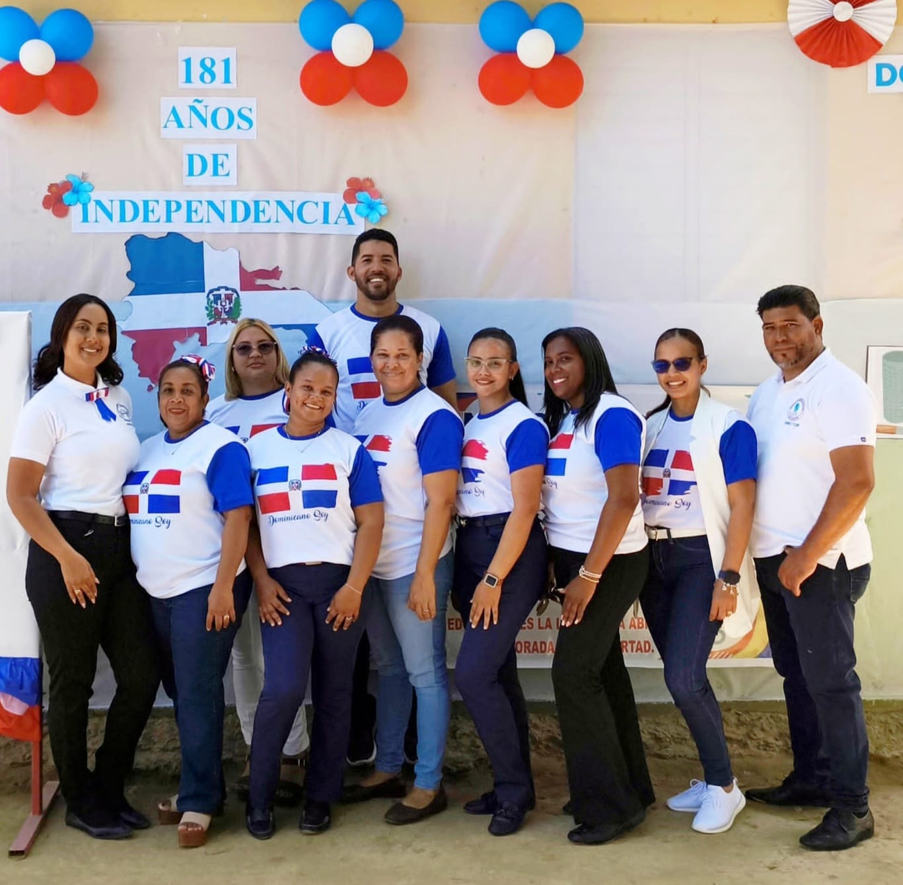

Nivel Secundario · Formación académica y humana
Educación que Inspira para que tus Ideas Florezcan
El Centro Educativo Taitabón es una institución comprometida con la formación integral de nuestros estudiantes, promoviendo valores, conocimientos y habilidades para la vida.

Desarrollo de competencias básicas, pensamiento crítico y hábitos de estudio.
Preparación académica, orientación vocacional y formación en valores ciudadanos.
Lenguas Extranjeras, Matemáticas, Ciencias Sociales, Ciencias de la Naturaleza, Educación Física, Educación Artística, Formación Humana, Apreciación y producción Literaria, Análisis y producción de texto Periodísticos y publicitarios, Filosofía sociales y Pensamiento Dominicano, Geografía Humana y Demografía Optativas .
Ciudadano responsable, ético y comprometido con su comunidad.
Capaz de comunicarse eficazmente y trabajar en equipo.
Preparado para estudios superiores y el mundo laboral.
Dirección: Comunidad de Taitabón, República Dominicana
Teléfono: 809-753-1387
Contacto: Gabriel Vargas
Correo: gabisitovg@gmail.com